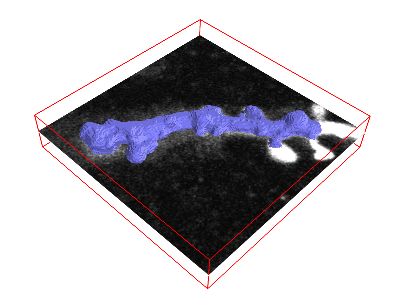
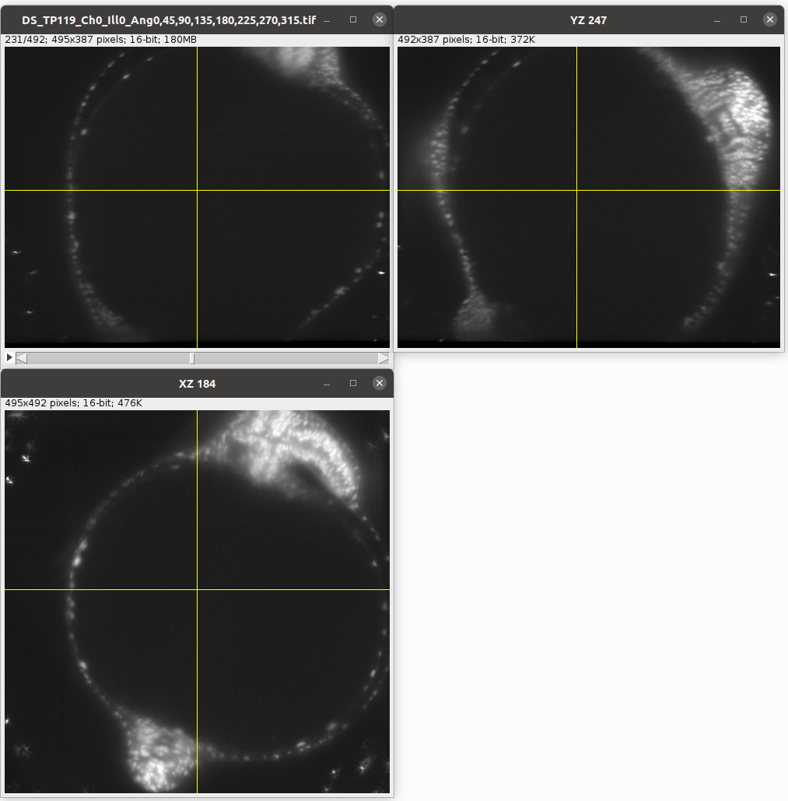
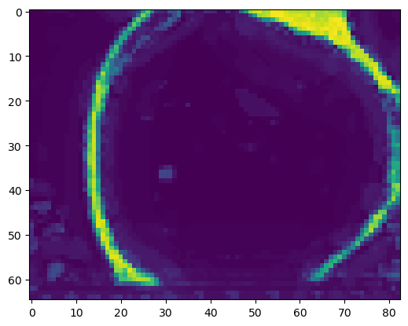
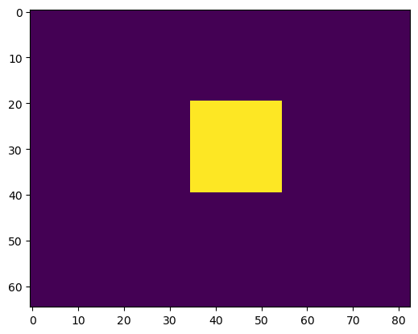
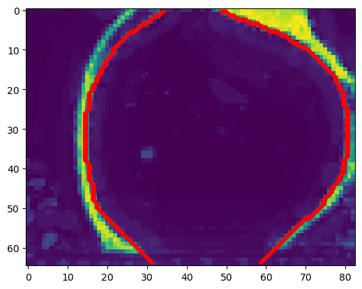
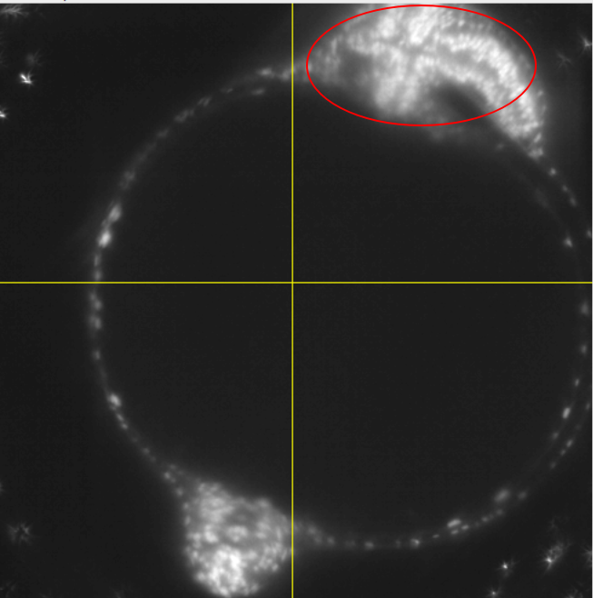
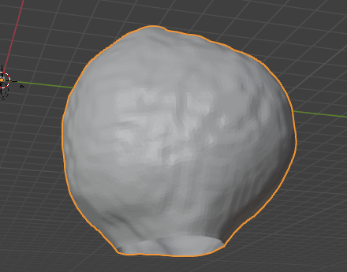
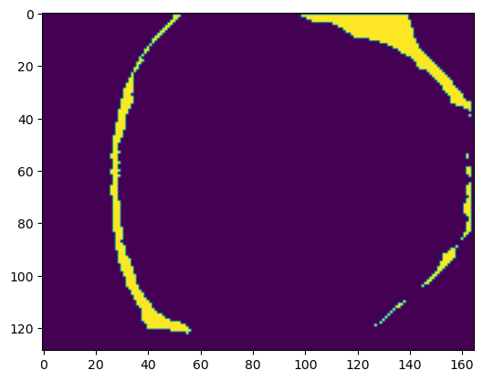

from blender_tissue_cartography import io as tcio
from blender_tissue_cartography import mesh as tcmesh
from blender_tissue_cartography import remesh as tcremesh
from blender_tissue_cartography import interpolation as tcinterp
from blender_tissue_cartography import registration as tcreg
from blender_tissue_cartography import morphsnakes7. Advanced segmentation and meshing
The first step in the tissue cartography pipeline is the creation of a 3d segmentation of your object of interest. So far, we have used ilastik’s pixel classifier to do this. However, this may not always work:
- Your data is too noisy/complicated so that with a pixel classification alone it is not possible to get a good segmentation of your object (e.g. the segmentation based on pixel classification has holes/gaps)
- You have a segmentation of the outline/edge of your object and need to convert that into a “solid” segmentation
Here, we first show how you can adress this issue using the morphsnakes package. This algorithm essentially works by computationally “inflating a balloon” at a seed point, with the ilastik probability output acting as a barrier. See this example, with the “balloon” in blue:

With the resulting solid segmentation in hand, you can create a triangular mesh using the marching cubes algorithm as before.
Surface reconstruction from a point set
However, this will not always work. What if the surface you are interested in is not the boundary of a solid volume (for example, a floating membrane with perforations)? In this case, we recommend the following: 1. Obtain a set of points on your surface 2. From the point cloud, create a mesh using the Poisson reconstruction algorithm.
These two algorithms are implemented in pymeshlab, and we’ll show you how to use them below.
import numpy as np
import matplotlib.pyplot as plt
import matplotlib as mpl
from skimage import transform
from scipy import ndimage
import os
import igl# this module will not be available on new ARM apple computers
import pymeshlab
from blender_tissue_cartography import interface_pymeshlab as intmsl
from blender_tissue_cartography import remesh_pymeshlab as tcremesh_pymeshlabWarning:
Unable to load the following plugins:
libio_e57.so: libio_e57.so does not seem to be a Qt Plugin.
Cannot load library /home/nikolas/Programs/miniconda3/envs/blender-tissue-cartography/lib/python3.11/site-packages/pymeshlab/lib/plugins/libio_e57.so: (/lib/x86_64-linux-gnu/libp11-kit.so.0: undefined symbol: ffi_type_pointer, version LIBFFI_BASE_7.0)
Morphsnakes to convert boundary into volume segmentation
Let’s see how to use morphsnakes to convert a segmentation of a surface boundary into a volumetric segmentation. Let’s consider the example of the zebrafish egg from the previous tutorial. The fluorescently marked nuclei surround a dark yolk which is not very different from the outside of the image:

Create 3d segmentation
Now we create a 3d segmentation, in this case using ilatik. As before, we use ilastik binary pixel classification. When classifying the data in ilastik, we take care that there are no “holes” in the shell we are segmenting out. We will then use morphsnakes for post-processing: we need to fill in the “hollow shell” resulting from the ilastik segmentation. We then load the segmentation back into the jupyter notebook.
Note: for this tutorial, only the ilastik segmentation data is included.
# After creating an ilastik project, training the model, and exporting the probabilities, we load the segmentation
# make sure you put in the right name for the ilastik output file
segmentation = tcio.read_h5(f"reconstruction_example/zebrafish_probabilities.h5")
segmentation = segmentation[0] # Select the first channel of the segmentation - it's the probability a pixel is part of the sample
segmentation = segmentation[::2, ::2, ::2] # to run this tutorial a little faster, we subsample by 2x
print("segmentation shape:", segmentation.shape)segmentation shape: (82, 65, 83)# look at the segmentation in a cross section
plt.imshow(segmentation[40,:,:], vmin=0, vmax=1)
Filling the segmentation using morphsnakes
# we create an initial "seed" for the segmentation, which is 1 in the inside of the embryo
seed_level_set = np.zeros_like(segmentation)
print("segmentation shape:", seed_level_set.shape, f"image center approximately at {np.array(seed_level_set.shape)/2}")
cube_size = 10
seed_level_set[40-cube_size:40+cube_size, 30-cube_size:30+cube_size, 45-cube_size:45+cube_size] = 1segmentation shape: (82, 65, 83) image center approximately at [41. 32.5 41.5]plt.imshow(seed_level_set[40,:,:], vmin=0, vmax=1)
help(morphsnakes.morphological_chan_vese)Help on function morphological_chan_vese in module blender_tissue_cartography.morphsnakes:
morphological_chan_vese(image, iterations, init_level_set='checkerboard', smoothing=1, lambda1=1, lambda2=1, iter_callback=<function <lambda>>)
Morphological Active Contours without Edges (MorphACWE)
Active contours without edges implemented with morphological operators. It
can be used to segment objects in images and volumes without well defined
borders. It is required that the inside of the object looks different on
average than the outside (i.e., the inner area of the object should be
darker or lighter than the outer area on average).
Parameters
----------
image : (M, N) or (L, M, N) array
Grayscale image or volume to be segmented.
iterations : uint
Number of iterations to run
init_level_set : str, (M, N) array, or (L, M, N) array
Initial level set. If an array is given, it will be binarized and used
as the initial level set. If a string is given, it defines the method
to generate a reasonable initial level set with the shape of the
`image`. Accepted values are 'checkerboard' and 'circle'. See the
documentation of `checkerboard_level_set` and `circle_level_set`
respectively for details about how these level sets are created.
smoothing : uint, optional
Number of times the smoothing operator is applied per iteration.
Reasonable values are around 1-4. Larger values lead to smoother
segmentations.
lambda1 : float, optional
Weight parameter for the outer region. If `lambda1` is larger than
`lambda2`, the outer region will contain a larger range of values than
the inner region.
lambda2 : float, optional
Weight parameter for the inner region. If `lambda2` is larger than
`lambda1`, the inner region will contain a larger range of values than
the outer region.
iter_callback : function, optional
If given, this function is called once per iteration with the current
level set as the only argument. This is useful for debugging or for
plotting intermediate results during the evolution.
Returns
-------
out : (M, N) or (L, M, N) array
Final segmentation (i.e., the final level set)
See also
--------
circle_level_set, checkerboard_level_set
Notes
-----
This is a version of the Chan-Vese algorithm that uses morphological
operators instead of solving a partial differential equation (PDE) for the
evolution of the contour. The set of morphological operators used in this
algorithm are proved to be infinitesimally equivalent to the Chan-Vese PDE
(see [1]_). However, morphological operators are do not suffer from the
numerical stability issues typically found in PDEs (it is not necessary to
find the right time step for the evolution), and are computationally
faster.
The algorithm and its theoretical derivation are described in [1]_.
References
----------
.. [1] A Morphological Approach to Curvature-based Evolution of Curves and
Surfaces, Pablo Márquez-Neila, Luis Baumela, Luis Álvarez. In IEEE
Transactions on Pattern Analysis and Machine Intelligence (PAMI),
2014, DOI 10.1109/TPAMI.2013.106
We neeed the lambda1-parameter of morphsnakes.morphological_chan_vese to be larger than the lambda2-parameter, since we want to segment out the “inside”.
Warning for big volumetric images, morphsnakes can take a long time. In doubt, increase downsampling.
segmentation_filled = morphsnakes.morphological_chan_vese(segmentation, iterations=100,
init_level_set=seed_level_set,
lambda1=2, lambda2=1, smoothing=3)CPU times: user 13.5 s, sys: 587 μs, total: 13.5 s
Wall time: 13.5 s# we may want to expand the segmentation a little
segmentation_filled_expanded = ndimage.binary_dilation(segmentation_filled, iterations=1).astype(np.uint8)# we use a contour plot to check that our segmentation matches the data
zslice = 40
plt.imshow(segmentation[zslice,:,:])
plt.contour(segmentation_filled_expanded[zslice,:,:], colors=["r"])
Important: the resulting segmentation will give us a mesh of the inner surface of the fish embryo. The outer surface at this stage is already a lot more complicated due to the fish’s body developing on top of the egg:

Meshing
We convert the segmentation into a triangular mesh using the marching cubes method, as before.
Important convention For sanity’s sake, we will always store all mesh coordinates in microns. This means rescaling appropriately after calculating the mesh from the 3d segmentation.
metadata_dict = {'resolution_in_microns': (1, 1, 1),}# now we create a 3d mesh of using the marching cubes method
vertices, faces = tcremesh.marching_cubes(segmentation_filled_expanded.astype(float), isovalue=0.5,
sigma_smoothing=1)
# EXTREMELY IMPORTANT - we now rescale the vertex coordinates so that they are in microns.
vertices_in_microns = vertices * np.array(metadata_dict['resolution_in_microns'])mesh = tcmesh.ObjMesh(vertices_in_microns, faces)
mesh.name = "reconstruction_example_mesh_marching_cubes"mesh.vertices.shape # number of vertices(18751, 3)# improve mesh quality using meshlab - optional
mesh_simplified = tcremesh_pymeshlab.remesh_pymeshlab(mesh, iterations=10, targetlen=1)mesh_simplified.vertices.shape # number of vertices(10914, 3)mesh_simplified.write_obj("reconstruction_example/zebrafish_mesh_marching_cubes.obj")Blender visualization:
Load the mesh into blender to look at the results:

The mesh has two holes as the embryo does not fully fit into the microscope field of view.
Surface reconstruction from a point cloud
As a first step, we’ll have to extract a point cloud from our segmentation. There are several ways you could do this, for instance, moving along an axis more or less transversal to the surface and looking for a local maximum in the segmentation intensity. We’ll do the simplest possible thing and consider all points with a segmentation intensity greater than a threshold (this is generally a bad idea). We then simplify the point cloud (reduce the number of points), and apply the surface reconstruction algorithm.
You can also do this graphically in the MeshLab GUI, using the “Surface reconstruction” filters.
# let's load the segmentation
segmentation = tcio.read_h5(f"reconstruction_example/zebrafish_probabilities.h5")[0]
# now let's select all the points where the segmentation probability exceeds some threshold
threshold = 0.4
segmentation_binary = segmentation>threshold
segmentation_binary = ndimage.binary_erosion(segmentation_binary, iterations=1)
points = np.stack(np.where(segmentation_binary), axis=-1)zslice = 80
plt.imshow(segmentation_binary[zslice,:,:])
# a point cloud is simply a mesh with no faces
point_cloud = tcmesh.ObjMesh(vertices=points, faces=[])
point_cloud_pymeshlab = intmsl.convert_to_pymeshlab(point_cloud)# let's create a pymeshlab instance and add out point cloud to it
# There are three relevant filters we will use:
# generate_simplified_point_cloud - reduce number of points in point cloud
# compute_normal_for_point_clouds - estimate normals for point cloid. This is required for the next step
# generate_surface_reconstruction_screened_poisson - Surface reconstruction by Poisson reconstruction
ms = pymeshlab.MeshSet()
ms.add_mesh(point_cloud_pymeshlab)
ms.generate_simplified_point_cloud(samplenum=1000)
ms.compute_normal_for_point_clouds(k=20, smoothiter=2)
ms.generate_surface_reconstruction_screened_poisson(depth=8, fulldepth=5,)
ms.meshing_isotropic_explicit_remeshing(iterations=10, targetlen=pymeshlab.PercentageValue(1))
mesh_reconstructed = intmsl.convert_from_pymeshlab(ms.current_mesh())mesh_reconstructed.faces.shape(24974, 3)mesh_reconstructed.write_obj("reconstruction_example/zebrafish_mesh_reconstructed.obj")# we also provide a simple wrapper for this procedure
mesh_reconstructed = tcremesh_pymeshlab.reconstruct_poisson(points, samplenum=1000,
reconstruc_args={"depth": 8, "fulldepth": 5})
mesh_reconstructed.faces.shape(7090, 3)Compare the result of the Poisson reconstruction and marching cubes methods in blender! The Poisson reconstruction gives us a mesh of the outer surface of the embryo.